Етно-еко-пасивна кућа
Самостални истраживачки рад на тему "Етно-еко-пасивна кућа" започет је 2010. године.
Први корак је критичко усвајање пионирског концепта у процесу пројектовања и грађења пасивне куће на примеру једне најраспрострањеније породичне куће
на географском простору Посавине (Република Српска) са данашњег гледишта некада заступљеног концепта у архитектури и грађевинарству класификован етно стилом.
Стил разумети као значење изведено преко синонима од речи: shema, приступ, метода, систем, поступак, начин, модалитет, правило, облик, методологија, план, пут, процедура, техника, средство, програм, пракса, арх. слог арх.
Други корак је потпуно истраживачки и најважнији у целој визији, усмерен на проналазак новог материјала за конструктивни елемент који треба да гради омотач зграде.
Овде се зграда третира као конструктивни систем састављен од основних и допунских елемената и омотача.
Такав материјал је концептуално са једном рецептуром справљен на бази локалних, природног порекла, доступних у већим количинама, обновљивим и еколошким сировинама.
Справљени материјал је од млевене пшеничне сламе и гела, осушен у режиму који диктира и обезбеђују природни услови животне средине.
Гел је мешавина глине + креча + вода, у једној слободно одабраној рецептури.
Глина је уситњена и чувана "да одлежи" у затвореном, негрејаном, проветраваном и затамњеном простору две године (копано 2010.године око 50 kg, и копано 2012.године 500 kg), узета са локације на дубини испод 1.00m од површине терена.
Слика 1. Компоненте композитног материјала природног порекла
Слика 2. Израда пробних колачића и уграђивање материјала у калупе 15х15х15cm - једна рецептура
Поред свих својстава које материјал треба да задовољи за омотач зграде као први експериментални циљ истраживања је провера топлотне стабилности материјала са гледишта провођења топлоте. Тако је након пет година у складу са програмом експерименталних истраживања спроведен први тест и то мерење топлотне проводљивости три узорка материјала у лабораторијским условима на Грађевинском факултету Суботица, Универзитета у Новом Саду. Конкретан резултат овог истраживања је публикован рад приказан у целини.
Након четири године од првог тестирања узорци су чувани у затвореној, проветраваној, грејаној и осветљеној просторији (кабинет 204а). Дана 03.XII.2021. године спроведено је поновљено тестирање топлотне стабилности узорака са инструментом Isomet 2114, од стране сада само другог стручног лица. Конкретани резултати анализе са коментарима овог тестирања нису публиковани као научно-истраживачки чланак-рад. Резултати поновљених мерења третирани су понаособ и свеобухватно, а дају се следећим радним записником.
Експериментално истраживање на основу критеријума употребљивости спрегнутог носача са две равни смицања у попречном Т - пресеку носача система просте греде, распона L=240cm при статичком дејству
1. Израда физичког модела спрегнутог носача система просте греде

2. "In situ" тестирање спроведено је од 18.08. - 22.08.2015. године у Пелагићеву, РС.

 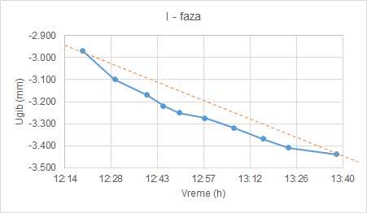
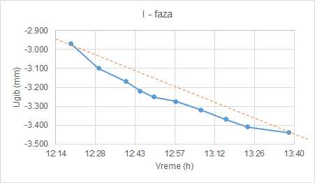
 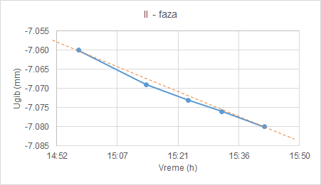
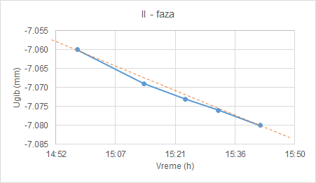
 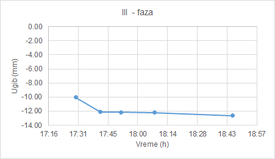
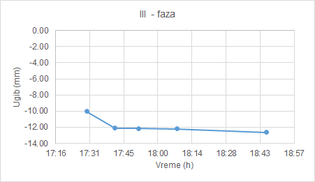
 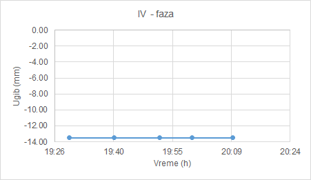
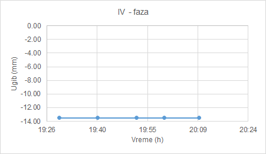


Лабораторијско тестирање узорака и утврђивање притисне чврстоће композитног материјала природног порекла
Табеларни приказ издвојених података из записника са тестирања притисне чврстоће узорака композитног материјала од 21.09.2015. године
| Серија тестирања | I | II | III | ||||||
|---|---|---|---|---|---|---|---|---|---|
| Датум справљања узорка | 08.08.2012. | 03.08.2013. | 06.08.2013. | ||||||
| Узорак | 1 | 2 | 3 | 1 | 2 | 3 | 1 | 2 | 3 |
| Маса узорка (kg) | 1.57 | 1.57 | 1.58 | 2.12 | 2.13 | 2.13 | 1.97 | 2.07 | 1.95 |
| Сила лома (kN) | 9 | 8 | 9 | 15 | 16 | 15 | 12 | 13 | 12 |
Експериментално теоријска анализа утврђивања притисне чврстоће узорака 15x15x15 cm, композитног материјала природног порекла третиране су статистичким моделом са нормалном расподелом "Bell Curve" из три серије са по три узорка на основу:
$$ f(x;\mu ,\sigma ^{2})=\frac{1}{\sigma\sqrt{2\pi}} e^{-\frac{1}{2}\left(\frac{x - \mu}{\sigma}\right)^2} $$
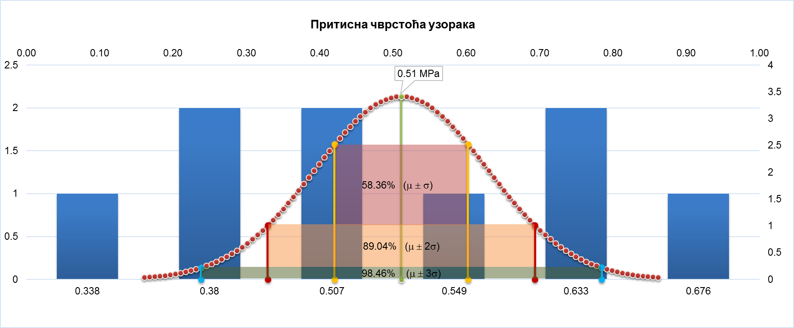
Рачунарско моделирање зграде са симулацијама дејства топлоте.
Autodesk Revit 2014
 ИММ: Соларна студија
ИММ: Соларна студија ИММ: Соларна студија
ИММ: Соларна студија ИММ: Соларна студија
ИММ: Соларна студија ИММ: Соларна студија
ИММ: Соларна студија ИММ: Соларна студија
ИММ: Соларна студија ИММ: Соларна студија
ИММ: Соларна студија ИММ: Соларна студија
ИММ: Соларна студија
Energy3d
- 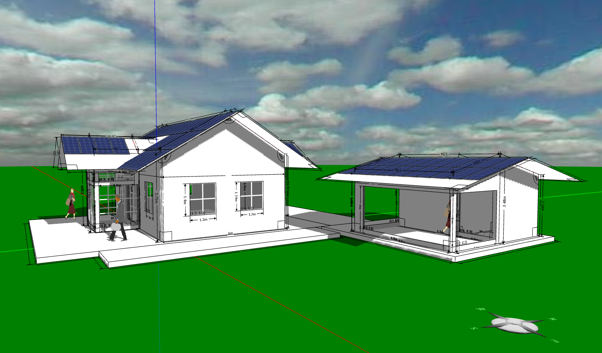
ИММ: Рачунарско моделирање зграде
- 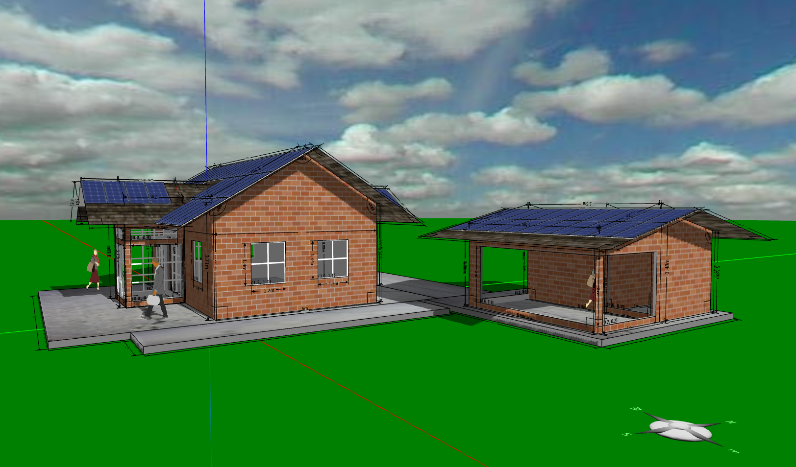
ИММ: Рачунарско моделирање зграде
 ИММ: Резултати студије енергетске ефикасности зграде
ИММ: Резултати студије енергетске ефикасности зграде- 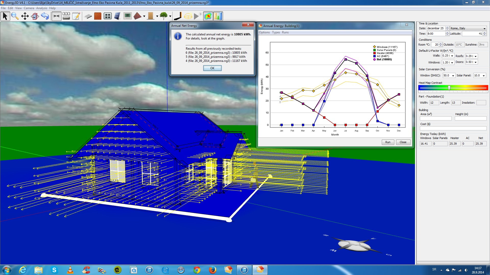
ИММ: Студија енергетске ефикасности зграде
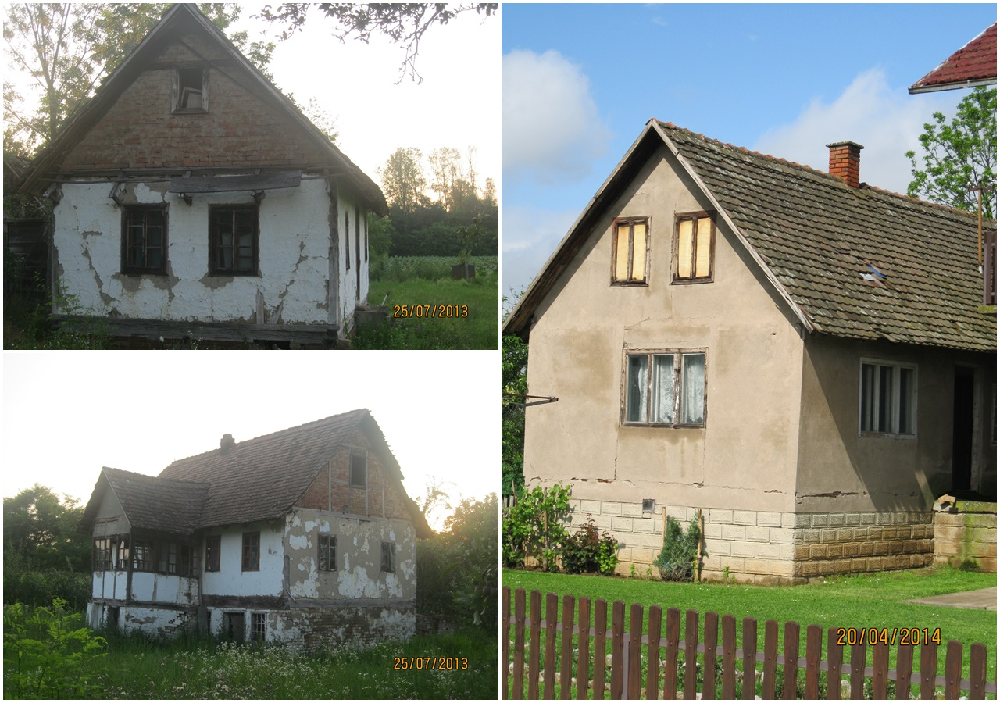
Yokotamituyasu: 伝統的構法で作られた木造建築物の耐震性能検証実験｜横田建築研究所 - 建築研究部 |01:48|
Надаље дати прилози су са гледишта грађевинске физике значајни за доно-шење одређених закључака методоло-гијом засновани на анализи-поређењу теорије и експеримента (у овом истра-живању то је мониторинг кондукционог температурног поља).

ИММ: Записник са анализом мерења температуре и влажности у зиду другог по реду теста од 10-11.04.2021.године


ИММ: Анализа мерења температуре и влажности у зиду (16-17.04.2021.)
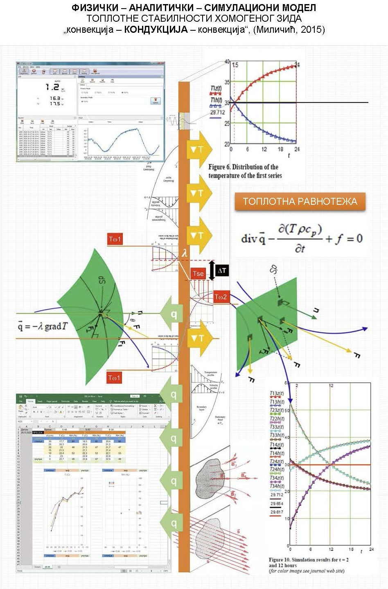
ИММ: Модел топлоте-кондукција, 2015.

ИММ: Мониторинг температурног поља
"загревање-хлађење" UNI-T UT181A

UNI-T:UT181A
Напомена: Издвојени видео прилози су јавно доступни и овде су подржани у циљу ширег информисања.
International Passive House Association: Design Strategies for Passive Buildings in the Mediterranean |22:02|
International Passive House Association: Passive House Windows for Mediterranean Climates |13:41|
Master Builders Victoria: Passive Solar Design Principles |05:42|
Learn_architectural_technology: 00 WT4026 passive design principles |05:42|
Fergal White: Passive House Standard in Sydney Climate |26:25|
Fergal White: Passive House Standard in Australian Climates |22:04|
Matt Siddell: How HUF HAUS has invented the modular house, a talk by Peter Huf |16:37|
Kiatsuda Somna: Hemp hurd brick |05:00|
CALMURA NATURAL WALLS: 20170801 Early Hempcrete sample Bending Test |03:55|
HUF HAUS: Modern eco house homes by HUF HAUS - DGNB Platinum Award |03:48|
HUF HAUS: HUF HAUS and IBM present HUF HAUS with Watson.